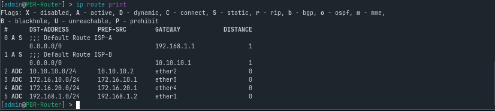
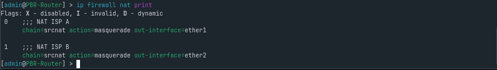

{kind=link}
In networks with more than one internet connection, special routing policies are often required so that each network segment can use a different internet path. Without proper configuration, all traffic will usually follow a single default route, which may not match the intended network design. To address this requirement, MikroTik provides a powerful feature called Policy Based Routing (PBR).
Table of Contents
In this tutorial, we will learn how to implement PBR using static IP configuration, with a simple and practical case study involving two internet connections referred to as ISP A and ISP B.
Case Study & Network Topology
In this scenario, the MikroTik router is connected to two separate internet links:
- ISP A connected to interface
ether1 - ISP B connected to interface
ether2
The objective of this configuration is:
- LAN 1 on interface
ether3 - LAN 2 on interface
ether4 - Traffic from LAN 1 is routed through ISP B
- Traffic from LAN 2 is routed through ISP A

This setup allows traffic separation based on source subnet, which is commonly used in labs, offices, and segmented networks.
IP Address Allocation
Before starting the configuration, we define a clear and static IP addressing scheme as shown below.
| Segment | Interface | IP Address | Gateway |
|---|---|---|---|
| ISP A | ether1 | 192.168.1.2/24 | 192.168.1.1 |
| ISP B | ether2 | 10.10.10.2/24 | 10.10.10.1 |
| LAN 1 | ether3 | 172.16.10.1/24 | – |
| LAN 2 | ether4 | 172.16.20.1/24 | – |
Using different IP networks and gateways for each ISP makes routing behavior easier to understand, manage, and troubleshoot.
Step 1 – IP Address Configuration
First, assign IP addresses to each interface according to the IP plan.

/ip address
add address=192.168.1.2/24 interface=ether1 comment="ISP-A"
add address=10.10.10.2/24 interface=ether2 comment="ISP-B"
add address=172.16.10.1/24 interface=ether3 comment="LAN-1"
add address=172.16.20.1/24 interface=ether4 comment="LAN-2"
Make sure all interfaces are up and running before proceeding to the next step. To verify the configuration, run:
{kind=link}
ip address print
Step 2 – Creating Routing Tables for Each ISP
Next, create separate default routes for each ISP using routing marks.
These routes will later be selected by policy routing rules.
{kind=link}
/ip route
add dst-address=0.0.0.0/0 gateway=192.168.1.1 routing-mark=to-ISP-A comment="Default Route ISP-A"
add dst-address=0.0.0.0/0 gateway=10.10.10.1 routing-mark=to-ISP-B comment="Default Route ISP-B"
At this stage, the router already has two independent internet paths. You can verify the routing table with: 
{kind=link}
ip route print
Step 3 – NAT Configuration (Masquerade)
To allow internal clients to access the internet, configure NAT masquerade on each ISP interface.
{kind=link}
/ip firewall nat
add chain=srcnat out-interface=ether1 action=masquerade comment="NAT ISP A"
add chain=srcnat out-interface=ether2 action=masquerade comment="NAT ISP B"
Without NAT, client traffic would fail to communicate with external networks even if routing is correctly configured.
Verify NAT rules with: 
{kind=link}
ip firewall nat print
Step 4 – Policy Based Routing (Route Rules)
Now we define routing policies based on the source IP address.

/ip route rule
add src-address=172.16.10.0/24 action=lookup-only-in-table table=to-ISP-B comment="LAN 1 via ISP B"
add src-address=172.16.20.0/24 action=lookup-only-in-table table=to-ISP-A comment="LAN 2 via ISP A"
With these rules applied:
- Traffic originating from LAN 1 will always use ISP B
- Traffic originating from LAN 2 will always use ISP A
Step 5 – Default Route for the Router Itself
To ensure the MikroTik router can still access the internet (for updates, DNS resolution, and NTP), add one default route without any routing mark.
{kind=link}
/ip route add dst-address=0.0.0.0/0 gateway=192.168.1.1 distance=1 comment="Default route for router"
This route is used only by the router, not by client traffic.
Step 6 – Testing the Configuration
After completing the configuration, perform testing from the client side.
- From a LAN 1 client, run a traceroute and verify that the first hop goes through ISP B
-

- From a LAN 2 client, run a traceroute and verify that the first hop goes through ISP A
-

If the traceroute results match the expected gateways, the Policy Based Routing configuration is working correctly.
Conclusion
By using static IP addressing and Policy Based Routing, managing multiple internet connections on MikroTik becomes more structured and predictable. This approach is well suited for labs, office networks, and environments that require traffic segmentation based on specific policies.